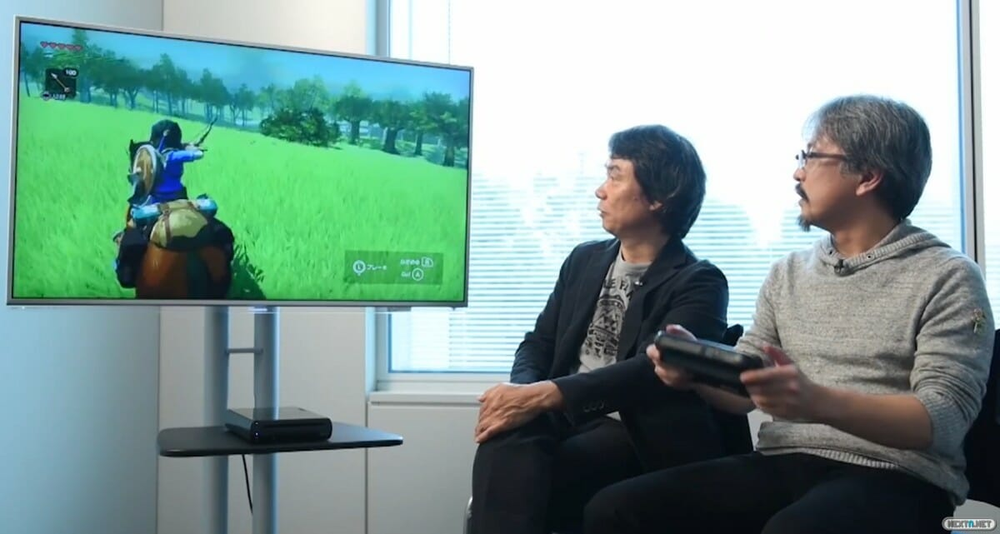
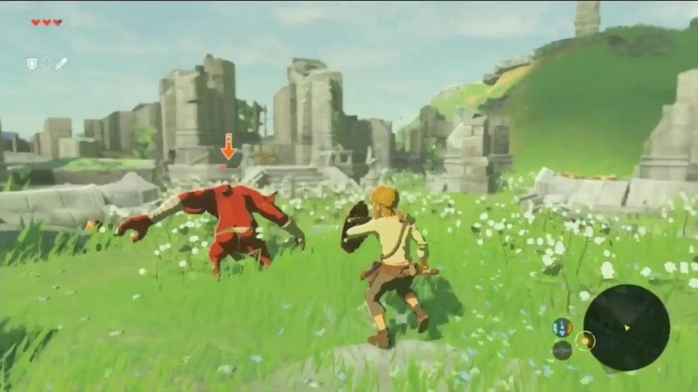
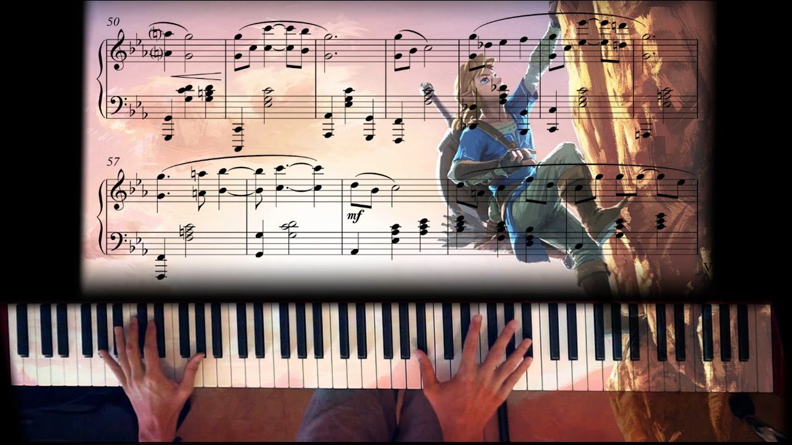

The Legend of Zelda: Breath of the Wild es un videojuego de acción-aventura mundo abierto desarrollado por Nintendo. Fue lanzado en 2017 para las plataformas: Wii U y Nintendo Switch.
Contexto
Habiendo pasado ya 6 años de la última entrega original en la saga de Legend of Zelda, y después de sufrir más de un par de retrasos en su fecha de lanzamiento, finalmente salió este videojuego el 3 de Marzo de 2017 al mundo. Era muy claro que este era un juego muy esperado por fans de todos los sectores de la industria de los videojuegos, sin haber mostrado tanto desde su primer anuncio ya tenía mucha anhelación detrás de él, y sobre todo por el giro original de incorporar elementos de RPG de mundo abierto, cosa que nunca había sido hecha en esta franquicia de videojuegos.
Historia

Este videojuego no tiene lugar en la "línea de tiempo" de Zelda previamente mostrada por Nintendo. Habiendo dicho eso, este es un videojuego que toma elementos de todos los rincones de Zelda, elementos que los fans de esta saga podrán reconocer a simple vista, pero con un giro original por todas partes. En el juego, somos el Hyliano "Link", el cuál es un caballero que acaba de despertar de un letargo de 100 años, causado por heridas causadas por la guerra. Sabiendo nada de lo que ha pasado en los últimos 100 años, nos aventuramos fuera de la cueva donde nos ubicabamos hacia un mundo de posibilidades, en el cual nuestra aventura comienza.
Gameplay
Esta entrega de la franquicia nos presenta un sinfín de innovaciones en cuanto a las mecánicas por las que se conocían los videojuegos de Zelda. Un mundo de gameplay hecho con físicas diseñadas desde 0, donde un rayo puede encender nuestra fogata, nuestra levitación magnética puede tirar objetos sobre los enemigos, o incluso podemos hasta planear de un lado a otro con corrientes de viento, las posibilidades no parecen tener fin. Como también se renovó completamente el sistema de combate, en el cual ahora las armas tienen sus usos contados, dándole a cada golpe un sentido completamente diferente ya que esto decidirá que armas nos acompañarán en ciertas partes de nuesra historia.
Música
La banda sonora fue compuesta principalmente por Hajime Wakai. Lo cual se puede sentir desde un principio, ya que los sonidos y canciones escuchadas en las distintas áreas del juego no son cómo se recuerda de los soundtracks compuestos por Koji Kondo, pero esto no es algo malo, ya que ayuda a establecer el tono de distintas formas en todo el juego, desde como construye el mundo hasta su historia. Todo esto logrado por "música ambiental", la cuál reaccina dependiendo de la situación que estés enfrentando como jugador.